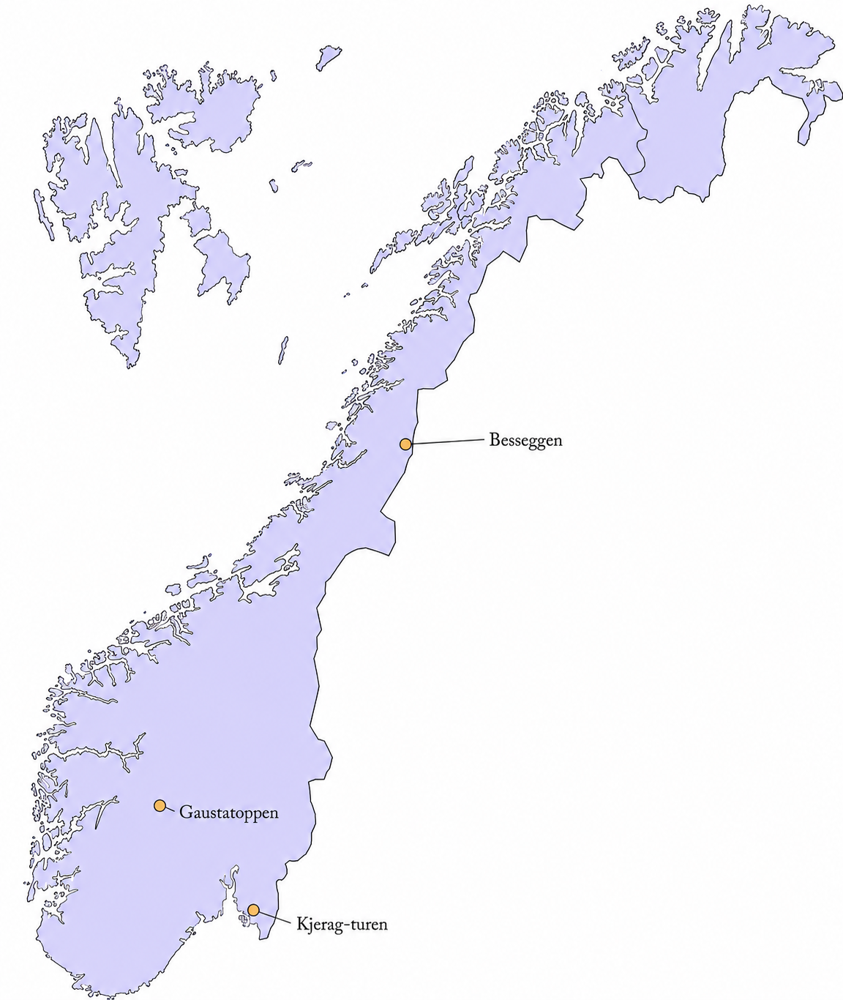

Fjellturer i Norge
Norske fjellturer er populære fordi de gir fantastisk natur og frisk luft. Mange liker å gå i fjellet for å oppleve vakre utsikter, stillhet og følelsen av frihet.
Populære fjellturer i Norge
Fottur til Kjerag

Ut på tur


Norske fjellturer er populære fordi de gir fantastisk natur og frisk luft. Mange liker å gå i fjellet for å oppleve vakre utsikter, stillhet og følelsen av frihet.
